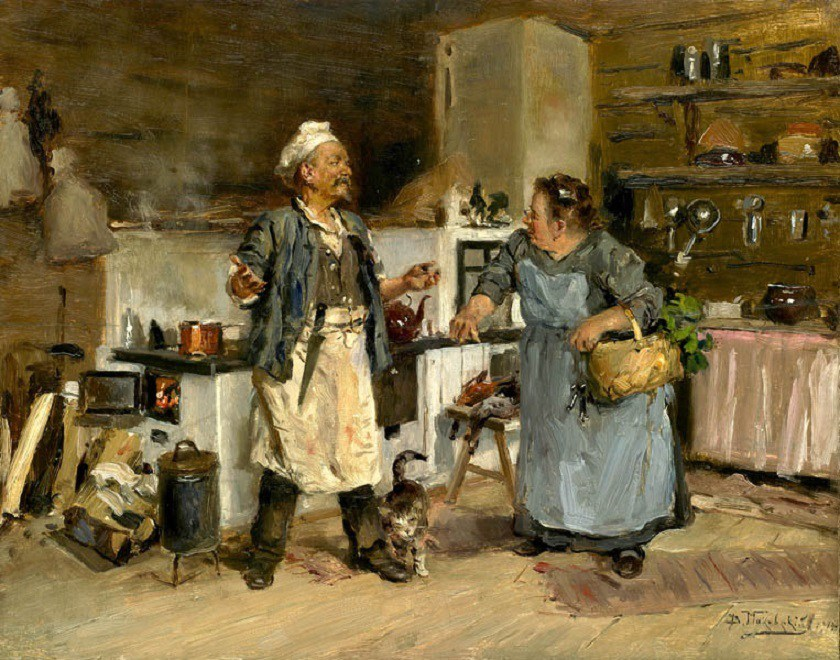

Пройдемся по долгому жизненному пути вечной спутницы человека Еды. Нижеизложенная версия предложена изданием Washington Profile.
Новые продукты появлялись в результате географических и научных открытий, технологических инноваций и т. д. Общение народов обогащало культуры и кулинарии.
К примеру, мороженое стало результатом фантазии и таланта кулинаров разных эпох и народов. В 62 г. н. э. в Древнем Риме для императора Нерона впервые было изготовлено мороженое из льда и соков. В 600-е г. н.э. в Китае к этим составляющим начали добавлять молоко. Мороженое в современном виде было изготовлено в 1769 году во Франции. А вафельные стаканчики для него появились в 1904 году в США.
Примерно 10 тыс. лет до н. э. В рационе человека появились пиво и хлеб. Пиво в бутылки разлили в 1568 году.
Примерно 6 тыс. лет до. н. э. Появление творога и сыра.
Примерно 3 тыс. лет до н. э. Люди научились варить суп.
В 2737 году до н. э. Отмечено употребление чая.
В 1500 году до н. э. Начато употребление шоколада. Плитка шоколада появилась лишь в 1849 году, а молочный шоколад — в 1875.
Примерно в 1200 г. до н. э. Впервые изготовлены конфеты. Конфеты в современном понимании этого слова появились лишь в 19 веке.
Примерно в 1000 г до н. э. Впервые засолены огурцы.
Народ Галла в Эфиопии стал использовать плоды кофейного дерева в качестве продукта питания: они смешивали их с жиром. Предположительно, кофе впервые стали использовать на территории провинции Каффа (откуда, согласно одной из наиболее популярных теорий, и происходит современное название напитка). Арабские торговцы перевезли семена кофе в Аравию и создали первую в мире кофейную плантацию на территории современного Йемена. Арабы называли напиток, изготовленный из этого растения “кахва” (“отгоняющий сон”) — на этом базируется вторая версия происхождения слова “кофе”. Кофе стал одним из символов глобализации. Кофейные плантации, которые изначально существовали только в Эфиопии и Аравии, ныне находятся в десятках стран мира. 80% взрослых обитателей Земли пьют кофе хотя бы раз в неделю. Распространение кофе было бы невозможным без вклада, который внесли представители очень многих стран и народов: к примеру, “эспрессо” изобрели в Италии, растворимый кофе — в США, а сливки и сахар в него впервые добавили в Австрии.
Примерно в 500 г до н. э. Приготовлена первая колбаса.
В 490 г до. н. э. Сварены первые макароны. Первый кулинарный рецепт макарон с сыром записан в 1367 году. В 1819 году изобретены спагетти.
В 4 веке до. н. э. Записан первый дошедший до нас рецепт салата (салат из белых бобов).
В 200 г .до. н. э. Впервые начата культивация спаржи.
55 г до. н. э. Впервые приготовлены горчица и рисовый пудинг.
1 век н. э. Мировая кулинария обогащается пирогами, пиццами и тостами. Современные пиццы появились в 1879 году.
2 век н. э. Впервые приготовлены суши (японское блюдо из риса и морепродуктов).
7 век . Создан рецепт знаменитой корейской квашеной капусты ким-чи.
13 век. Изобретены вафли.
15 век. Впервые изготовлены блины.
1411 год. Записана рецептура изготовления прославленного сыра Рокфор. В 1554 году открыт рецепт сыра Камамбер.
1487 год. Изобретены “хот-доги”hot dogs — булочки с сосиской, ставшие национальным блюдом американцев. Впервые сосиски упоминаются в “Одиссее”, созданной Гомером в 9 веке до нашей эры. В Германии и Австрии, где сосиски и колбасы стали основой национальной кухни, особенно славились сосиски из Франкфурта-на-Майне и Вены, поэтому во многих странах мира сосиски продаются под названием “франкфуртеры” или “винеры” (так же, как и булочки с котлетой известны как “гамбургеры” — из Гамбурга). В 1987 году Франкфурт торжественно отметил 500-летие изобретения хот-дога. Патриоты немецких сосисок нашли доказательства, что первый “хот-дог” был изготовлен в 1487 году, за пять лет до того, как Христофор Колумб открыл Америку.
Происхождение термина “хот дог” точно неизвестно. Известно лишь, когда оно впервые появилось в печати — это произошло в 1895 году. Также загадкой остается, кто и когда придумал разрезать длинную булочку и вставлять в нее сосиску. Известно, почему это было сделано: горячие, жирные и мокрые сосиски есть руками неудобно, а одноразовой посуды и бумажных салфеток в 19 веке еще не придумали. Разносчики сосисок шли на самые невероятные ухищрения, чтобы побудить покупать их товар. Один из них держал в своем фургоне перчатки, которые выдавались во временное пользование покупателям. В 1860-е годы аккуратные немецкие иммигранты стали продавать сосиски в комплекте с куском хлеба, а потом неизвестный изобретатель додумался использовать для этого булочки, потому что с ломтя хлеба сосиски часто скатывались и падали на землю.
1495 год. Появился мармелад.
1544 год. В Европе появились помидоры.
1563 год. В Европе начали выращивать картофель. Индейцы, жившие в Андах, культивировали картофель еще 7 тыс. лет назад. Долгое время картофель в Европе не получал широкого распространения. Ситуация изменилась лишь после 1780 года — свое признание картофель сперва обрел в бедной Ирландии, постоянно страдавшей от голода. В клубне содержится большинство витаминов и микроэлементов, необходимых для существования человека. Кроме того, поле, засеянное картофелем, способно обеспечить пищей больше людей, чем любой другой овощ или фрукт, культивируемый на аналогичном участке земли. Историк Ларри ЦукерманLarry Zuckerman, автор книги “Картофель: Как Клубень Спас Мир Запада”The Potato: How the Humble Spud Rescued the Western World, утверждает, что картошка стала одним из важнейших факторов бурного развития Запада в 19-20 веках. Картофель смог обеспечить дешевым и здоровым питанием десятки миллионов людей, благодаря этому стала возможной промышленная революция.
1610 год. Впервые выпечены бублики.
1621 год. Впервые создана технология производства “воздушной кукурузы” (попкорна). Широкое распространение этого блюда началось лишь в начале 20-го века, когда появились кинотеатры.
1680-е годы. Появился жареный картофель по-французски. Ныне это блюдо в обязательном порядке входит в меню всех ресторанов фаст-фуд. Долгое время жареная картошка была весьма редким и ценным блюдом, несмотря на широкое распространение картофеля. Причина заключалась в дороговизне масла — картошку было выгоднее варить.
17 век. В мировое меню вошел кетчуп (малоизвестно, что его изобрели в Китае, и название этого продукта — китайское, причем томаты в его рецептуру не входили). Ныне существующая американская компания Heinz первой в мире начала производить кетчуп а 1876 году.
1739 год. Крекеры. По иронии судьбы, творцом современных крекеров был не повар и даже не гурман-любитель, а религиозный проповедник. Американец Сильвестер ГрэмSylvester Graham стал автором теории, согласно которой переедание ведет к появлению излишнего веса, который, в свою очередь, является причиной многих болезней, которые, в свою очередь, являются видом божественного наказания за неумеренность. Чтобы избежать ожирения, Грэм предлагал полностью отказаться от употребления мяса. Кроме того, Грэм занялся бизнесом — он начал выпускать крекеры, которые, в отличие от изделий тогдашних пекарей, изготавливались исключительно из муки грубого помола. Грэм не имел медицинского образования, но его идеи соответствуют современным представлениям медиков. Представления Грэма были основаны не на научных фактах, а на существовавшем тогда классовом разделении. Хорошо питавшиеся богачи были толстыми, бедняки — худыми, а религиозные деятели заботились о том, как накормить голодных.
1756 год. Изобретен соус майонез.
1798 год. Появился лимонад (то есть газированный безалкогольный напиток). Тогда во Франции и Англии начали продавать воду, насыщенную углекислым газом. Это считалось недорогим подражанием целебным минеральным водам, причем газировку продавали в аптеках, а не в обычных магазинах. Дальнейшую экспансию обеспечили химики: в 1784 году была впервые выделена лимонная кислота (из лимонного сока). В 1833 году в Англии в продаже появились первые газированные лимонады (название напитка — lemonade — как раз и происходит от слова lemon”лимон”). В 1835 году лимонад начали разливать в бутылки. В 1885 году создан рецепт лимонада Dr. Pepper, в 1886 году — Coca-Cola, в 1898 году — Pepsi-Cola.
1810 год. Прорыв в мировой пищевой индустрии и военном деле. Изобретена консервная банка. Знаменитая фраза Хлестакова “Суп в кастрюльке прибыл из Парижа…” посвящена именно ей. Британский торговец Питер ДюранPeter Durand запатентовал консервную банку. Первая фабрика по производству консервов открылась в 1813 году, а машина, позволившая автоматизировать процесс, была изобретена в 1846-м. По иронии судьбы, консервный нож был изобретен намного позднее банки — только в 1858 году. В 1959 год была запатентована консервная банка, для которой не нужна открывашка. С конца 19 века европейские державы стали учитывать запасы консервов как стратегические запасы — наряду с запасами пороха, пуль и военной формы.
1830 год. Изобретен “король супов” — марсельский рыбный суп буайбесс.
1845 год. Впервые изготовлено желе.
1848 год. Изобретение жевательной резинки в современном понимании этого слова. Многие народы мира жевали листья растений, смолу и т.д. В 1869 году в США был получен первый патент на технологию изготовления жевательной резинки. Этот патент оказался абсолютно бесполезным — защищенная им рецептура и технология никогда не применялись для реального производства жевательной резники. В 1871 году была изобретена машина для изготовления жвачки.
1853 год. Картофельные чипсы. Изобретателями нового блюда могут считаться железнодорожный магнат и один из легендарных американских миллионеров Корнелиус ВандербильтCornelius Vanderbilt и повар отеля в городе Саратога-Спрингс Джордж КрамGeorge Crum. В 1853 году Вандербильт остановился в гостинице, где работал Крам, и во время обеда приказал официанту унести поданную ему жареную картошку, так как она была слишком толсто нарезана и не прожарилась. Крам решил исправить ситуацию: он очень тонко нарезал картофель, обжарил его в большом количестве масла до хруста и посолил. Вандербильт пришел в восторг.
1870 год. Маргарин.
1871 год. Записан рецепт говядины по-строгановски (бефстроганов).
1879 год. Изобретен сахарин. Его начала производить ныне существующая компания Monsanto. При этом главными покупателями сахарина стали бедняки, которым представилась возможность постоянно пить сладкий чай или кофе. Сахарин стал первым из бесчисленного ряда продуктов, которые были призваны заменить некий “вредный” компонент еды, например, сахар или жир. Именно тогда зародилась индустрия похудания: началось производство особых товаров, рассчитанных на борьбу с лишним весом. В США в 1977 году сахарин был признан канцерогеном, а в 1996 году — он был “оправдан”.
1885 год. Условная дата изобретения гамбургера. Американские историки считают, что гамбургеры изобрели на территории современной России или Украины. Несколько тысяч лет назад кочевники-скифы жарили куски говядины и ели ее, положив между двумя кусками хлеба (процесс описан Геродотом). На титул создателя современного гамбургера претендуют Чарли НэгринCharlie Nagrin, который в 15-летнем возрасте изготовил гамбургер на сельской ярмарке, и фермер Фрэнк МенчезFrank Menches из Огайо, который кормил этим блюдом своих работников. Подлинным “отцом” современного гамбургера считается предприниматель Уолтер АндерсонJ. Walter Anderson из города Уичита, штат Канзас, который основал сеть закусочных White Castle Hamburger, где главным блюдом меню стал гамбургер. Ныне не существующая сеть кафе Wimpy Grills, основанная в 1934 году, придала гамбургерам два качества, которые определили их будущую глобальную экспансию. Впервые гамбургеры стали продавать по крайне низким ценам, и впервые они начали продаваться за пределами США.
1924 год. Замороженные продукты. Появление индустрии полуфабрикатов.
2007 год. По оценкам Министерства Торговли США Department of Commerce, среднестатический американский супермаркет предлагает к продаже 25 тыс. наименований пищевых товаров. При этом две трети калорий американцы получают за счет употребления лишь трех продуктов — кукурузы, пшеницы и картофеля.